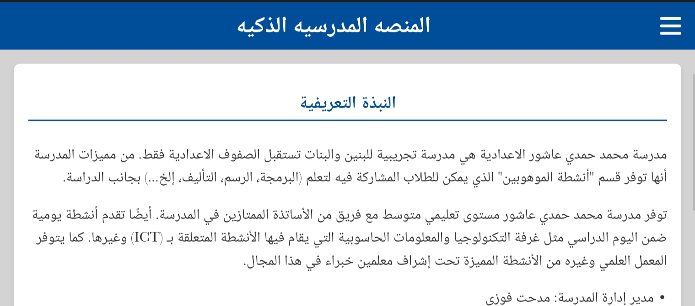
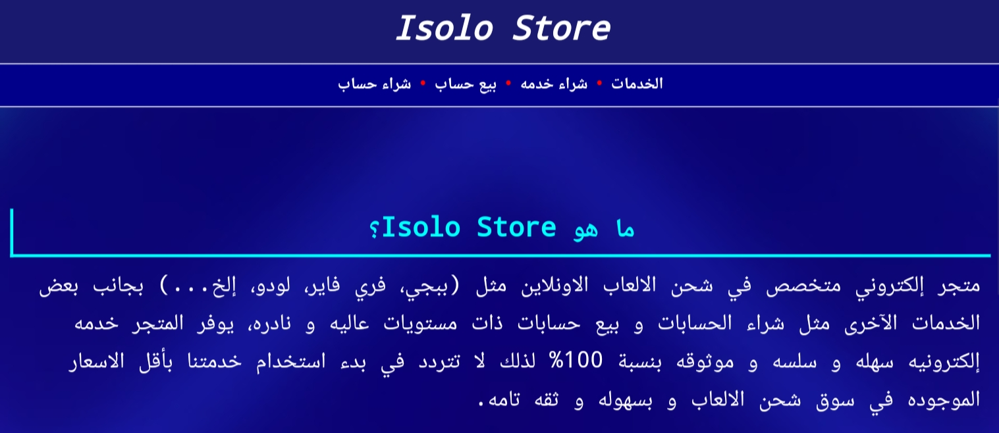
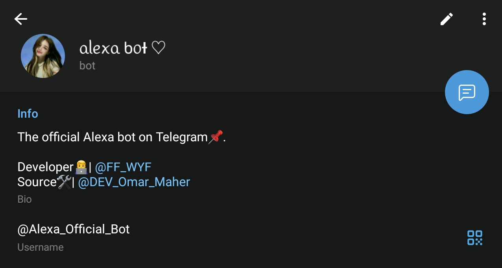

من هو عمر ماهر؟
شاب مصري مسلم مقيم في مدينة الاسكندريه، اعمل في مجال تصميم و تطوير مواقع الويب منذ اكثر من عامين ڪ مطور واجهات مستخدم (Front-end) لمواقع الويب، انا اهتم دائمًا بتمييز اعمالي حيث احب ان يكون كل اعمالي لها اسلوب مختلف عن كل الاعمال الآخرى ليكون عملى متميز وسط كل الاعمال الموجوده في نفس المجال، أبرع ايضا في حل المشكلات التقنيه في مجال الـ (Back-end) لمواقع الويب حيث استطيع اكتشاف الاخطاء و اصلاحها في وقت قياسي.
المزيد عني ←
خبراتي في تطوير الويب
أعمل على تطوير مواقع الويب باستخدام تقنيات حديثة مثل HTML وCSS وJavaScript لتصميم واجهات مستخدم جذابة وتفاعلية. كما أستفيد من قدرات PHP في إدارة العمليات الخلفية مثل معالجة النماذج، ربطها بقواعد البيانات، وإرسال الطلبات مباشرة إلى البريد الإلكتروني، مما يجعل المواقع أكثر كفاءة وسلاسة في الأداء.
بعض أعمالي و إنجازاتي



جميع المشاريع ←
أستثمارات جديده
منصة إشْرَاقَاتٌ إِسْلَامِيَّةٌ:
منصه اسلاميه كبيره تهدف الي نشر الوعي الديني، تقدم ادوات اسلاميه مثل مذكر الصلاوات، اتجاه القبله، و العديد من الادوات المفيده، بينما توفر ايضا مكتبه إلكترونيه مليئه بالقصص المختلفه.
منصة Limousine for you:
هي منصه متطوره لشركة رحلات داخليه مصريه، المنصه عباره عن صفحات تعريفيه و صفحات لحجز الرحلات و غيرها من الصفحات.
عملاء أفتخر بهم
-
شغلك جميل جدا و منظم و مميز و هيرجع بنتائج مثاليه للمدرسه من شهره ل تسهيل الاداره المدرسيه و تطوير المدرسه بجد فعلا المنصه ممتازه لكل من اولياء الامور، المعلمين، الطلاب المدرسه بتتمنى لك دوام التوفيق بإذن الله
أ. مدحت فوزي -
حابب اشكر عمر على شغله الجميل جدا اللي فعلا هيساعدني اني اطور فيما بعد من مشروعي و ازيد ارباحه بفضل عمر اللي صمملي الموقع ده بالكامل و بأداء عالي جدا و ألتزامه بميعاد التسليم فعلا عمر مطور صادق و امين جدا
أ. عبدلله محمد -
الاستاذ عمر ماهر حقيقة يعني مطور مخلص لعمله قدر انه يسلملي المشروع الخاص بيا قبل ميعاد التسليم بكتير و بدقه عاليه جدا بدون اي اخطاء، شكرا للمطور عمر
أ. يارا احمد